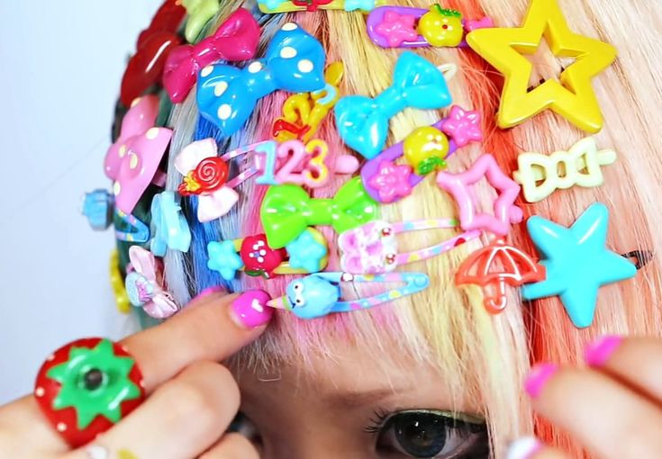
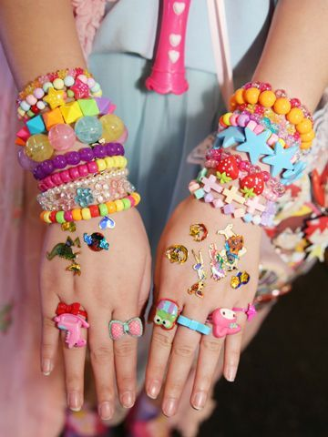
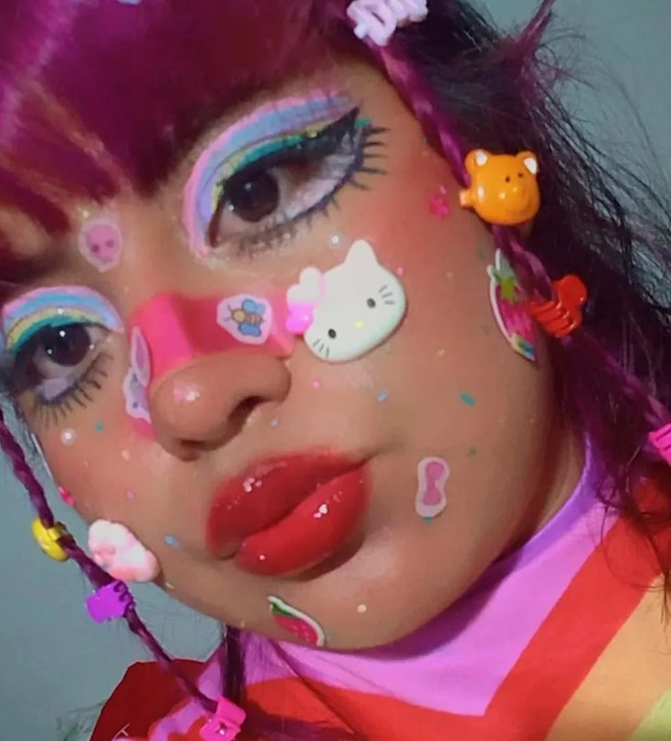

3 svarbiausi decora motyvai, be kurių decora apranga neįsivaizduojama

plaukų segtukai

spalvoti papuošalai

makiažas
decora lengva atpažinti iš daugybės segtukų, kurie prisegioti per visą galvą.segtukai būna įvairių spalvų ir dydžių, dažnai rankų darbo. nors kai šis stilius tik pradėjo kurtis, buvo labiau mėgta nešioti spalvotas kepures.
decora pavadinimas yra kilęs iš žodžio dekoruoti, tad papuošalai yra privalomi. daugybė apyrankių, apykojų, karolių, spalvoti diržai bei auskarai
makiažas gali būti įvairus, nuo paprasto spalvoto akių šešėlio, iki gyaru makiažo, ar net veido dažų. taip pat populiarūs lipdukai ant veido, pleistras ant nosies ir makiažu nupiešti įvairūs piešinėliai.